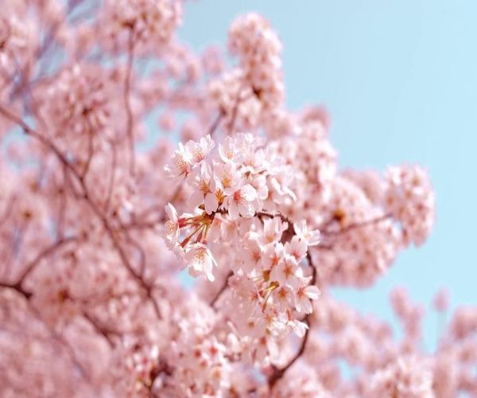

What are Cherry Blossoms?
A cherry blossom is a flower of many trees of genus Prunus or Prunus subg. Cerasus. They are known as Japanese cherry and sakura. They are also a common species in East Asia, including China, Korea, and especially in Japan. They generally refer to ornamental cherry trees, not to be confused with cherry trees that produce fruit for eating.
Significance of Sakura
Cherry blossoms are a symbolic flower of the spring, a time of renewal, and the fleeting nature of life. Their life is very short. After their beauty peaks around two weeks, the blossoms start to fall. Hanami is the name of the custom in which people celebrate the cherry blossoms blooming! Hanami directly translates to "watching blossoms", and the tradition can be traced back at least a thousand years! It is often celebrated with a potluck party.